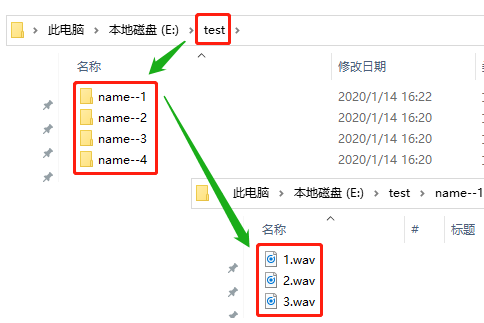
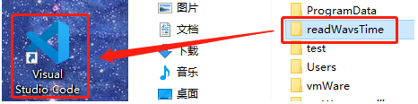
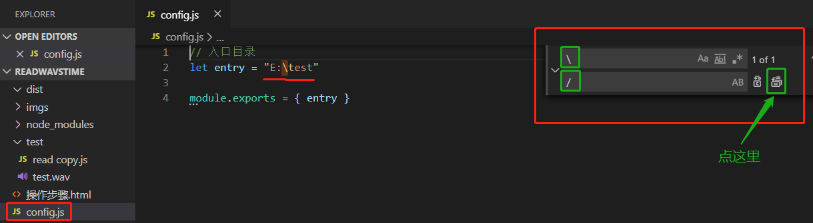

读文件夹下音频总时长
适用情形：
1.音频格式为 wav
2.文件目录为如下形式

操作步骤
1.找到程序所在文件夹。比如：
D:\readWavsTime
2.拖动
readWavsTime文件夹
至
vscode图标
上。

3.复制待读文件夹的路径。如实例中test文件夹的路径为：
E:\test
4.将步骤3中的地址粘贴至config.js中entry后的引号内，并将路径中
\
修改为
/
（快捷键 ctrl+h）

5.在程序所在文件夹的地址栏输入
cmd
后按下
enter键
6.在命令行窗口输入：
npm start
后按下
enter键
。
7.等待窗口提示
已生成文件...
即可
8.读其他文件夹时，
重复步骤3-7